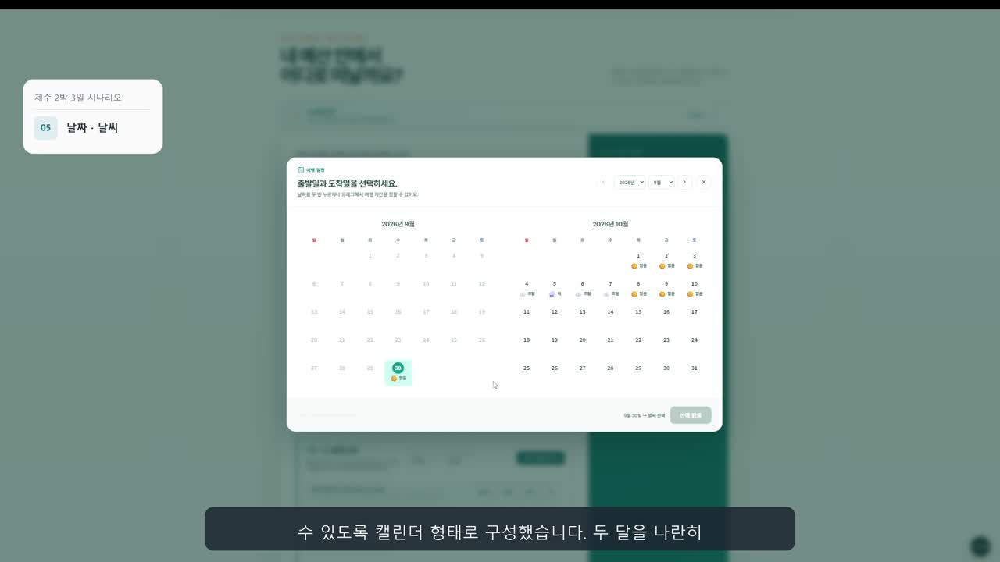
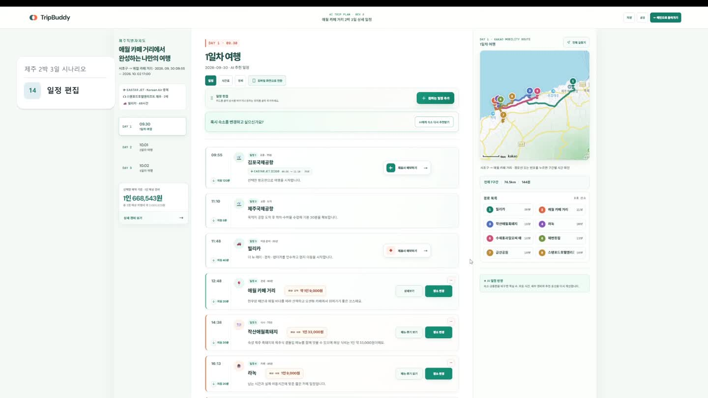

여행 계획이 바뀌어도,
다시 시작하지 않도록.
예산과 취향에 맞는 일정을 만들고, 현지 상황에 따라 직접 수정하는 AI 여행 플랫폼입니다. 교통·숙소·관광지 선택을 날짜별 일정, 지도 동선과 예상 경비까지 연결했습니다.
먼저, 실제 동작을 확인하세요
조건을 고르는 순간부터 여행지에서 일정을 바꾸는 순간까지. 실제 서비스 녹화 영상입니다.
1920 × 1080 · 약 6분 21초 · 자막·음성 포함
다운로드: 시연 영상 MP4
화면 설계부터 실제 데이터 연결까지
사용자가 어떤 순서로 선택하고, 결과를 어떻게 확인하고 수정할지 정리한 뒤 React 화면과 API 연동으로 구현했습니다. 앞 단계의 선택값이 최종 일정과 경비에 이어지도록 만드는 것이 핵심이었습니다.
- 서비스 기획: 여행 조건 입력부터 생성·편집까지 사용자 흐름과 화면 구성
- 프론트엔드: 비교·선택, 일정 편집, 지도·경비 및 모바일 화면 구현
- API 연동: 서버 응답 변환, 비동기 생성 상태와 오류·재시도 처리
- 팀 협업·발표: API·배포 조건 조율, 실제 동작 시나리오와 발표자료 구성
백엔드와 AWS 인프라는 각 담당자와 협업한 팀 결과물입니다.
사용자가 결정하는 순서에 맞춘 UI·UX
여행 준비에는 서로 영향을 주는 선택이 많습니다. 예산·위치·날짜 같은 기준을 먼저 정하고, 그 조건에서 교통과 숙소를 비교한 뒤 취향을 더해 일정을 생성하는 순서로 연결했습니다.
예산을 첫 단계에 둔 이유
TripBuddy의 모토는 ‘주어진 예산 안에서 일정을 만든다’입니다. 여행지를 고른 뒤 비용을 맞추는 흐름보다, 예산을 먼저 정하고 이후의 선택과 일정 생성에서 기준으로 이어가도록 배치했습니다.
출발지는 정확한 위치, 도착지는 여행자가 떠올리는 장소
항공·KTX·자차처럼 이동 방식이 다양하고, 특히 자차는 출발 지점부터 일정에 영향을 줍니다. 큰 지역명만으로는 위치를 충분히 좁힐 수 없어 시·구·동 단위 행정권역 지도와 주소 입력을 구성했습니다. 도착지는 다르게 접근했습니다. 여행자는 ‘강원도 어느 구’보다 ‘속초에 갈까, 해운대에 갈까’라고 생각하므로 관광 지역과 명소를 중심으로 편성했습니다.
같은 ‘지역 선택’이어도 사용 목적에 따라 입력 방식을 달리했습니다.

날짜가 교통·숙소보다 앞에 오는 이유
정확한 여행 날짜가 있어야 그 날짜의 교통편과 숙소를 선택할 수 있습니다. 숙소는 현지 관광지와 식당을 배치하는 기준점이므로, 날짜를 먼저 정한 뒤 교통·숙소를 선택하고 현지 일정을 생성하도록 연결했습니다. 해당 날짜의 객실 상황을 확인해야 한다는 고려도 순서 설계에 반영했습니다.
출발시각을 넣었다가 공통 화면에서 뺀 이유
처음에는 날짜 화면에 출발시각을 넣었습니다. 하지만 항공과 KTX는 선택한 티켓의 출발·도착 시각이 일정의 기준이므로, 별도로 묻는 입력은 의미가 겹쳤습니다. 이를 공통 날짜 화면에서 제거하고 교통편 선택 결과가 시간 기준으로 이어지게 했습니다. 직접 이동 시각을 정하는 자차를 대표 교통수단으로 고른 경우에만 출발·도착 시각을 설정하도록 구성했습니다.
예산 → 위치·날짜 → 교통·숙소 → 현지 일정. 각 단계가 독립된 질문이 아니라, 다음 선택에 필요한 조건을 쌓아가는 흐름입니다.
마지막에 취향을 더해 맞춤 일정으로
교통편과 숙소로 여행의 기본 틀을 정한 뒤 여행 테마와 선호 음식을 선택하도록 배치했습니다. 이동·숙박 조건이 갖춰진 일정에 여행 스타일과 식당 취향을 더해, 같은 지역에서도 개인에게 맞는 일정을 생성하려는 설계입니다.
비교에 필요한 정보를 같은 화면에
날짜는 두 달을 나란히 보여줘 월말·월초 일정도 한 번에 선택할 수 있게 했습니다. 교통과 숙소는 비교 정보를 카드에 모으고, 최종 확인에서는 원하는 항목만 다시 선택할 수 있도록 구성했습니다.
선택한 조건이 결과에서도 이어지도록
항공편의 출발·도착 시각, 숙소와 취향을 생성 요청에 전달하고 날짜별 일정과 지도에 연결했습니다. 공항 이동과 현지 관광 구간을 구분하고, 일정과 경비의 금액 기준이 달라지지 않도록 처리했습니다.

생성된 일정에도 수정의 여지를
방문 순서 변경, 장소 교체, 일정 추가·삭제를 결과 화면에서 할 수 있도록 구현했습니다. 수정 후에는 동선과 이동 시간을 확인해 다음 판단으로 이어갈 수 있습니다.
여행지에서는 모바일로 같은 흐름 유지
계획을 세운 PC 화면에서 모바일로 옮겨도 일정·경비·경로를 확인하고 방문 순서와 장소를 바꿀 수 있도록 반응형 화면을 구성했습니다.
위 내용은 구현과 시연으로 확인할 수 있는 설계 선택입니다. 사용자 테스트에 의한 전환율·만족도 개선 수치는 측정하지 않았습니다.
발표자료, 다운로드 없이 넘겨보세요
기획 배경과 팀의 데이터·AI·인프라 구현 과정을 담은 발표자료 46장입니다. 키보드 방향키 또는 아래 버튼으로 이동할 수 있습니다.
PPT의 페이지 내용을 이미지로 제공하는 미리보기입니다. 삽입 영상은 위의 시연 플레이어에서 재생하세요.
다운로드: 발표 PDF · 영상 포함 PPT 원본
화면이 실제 데이터와 만나는 부분
좌표와 거리·시간·가격을 공통 형식으로 변환해 화면에 연결했습니다. AI 생성 요청 후 처리 상태를 확인하고 완료 결과를 표시했으며, 인증·세션·오류 처리를 공통 계층에서 관리했습니다.
API 공통 처리 · AI 일정 연동 · 일정 편집 화면 · 경비 계산
시연 범위와 운영 안내
항공·숙소 금액은 예상 견적이며, 렌터카 업체·가격은 시연용 데이터입니다. 일부 상세 정보는 요청 실패 시 대체 데이터를 사용합니다. 실제 결제·예약 확정 기능이나 국내 모든 지역의 품질 검증을 의미하지 않습니다.
실습용 AWS 환경은 2026년 10월 8일 종료 예정입니다. 이후 온라인 AI 생성·외부 데이터 조회는 이용할 수 없지만, 이 페이지의 영상과 발표자료는 계속 확인할 수 있습니다. PWA의 정적 자산 캐시와 온라인 AI·지도 기능은 구분됩니다.
기술 구성과 개발 이력
React 19 · Vite 8 · Tailwind CSS 4 · Kakao Maps · Java 21 · Spring Boot 4 · MariaDB · Redis · Amazon Bedrock · SQS
개발은 별도 비공개 팀 저장소에서 진행했습니다. 공개 저장소의 커밋·기여자 표시는 전체 개발 이력이나 개인별 기여도를 나타내지 않습니다. 실행 방법과 기존 팀 개발 이력은 GitHub README에서 확인할 수 있습니다.